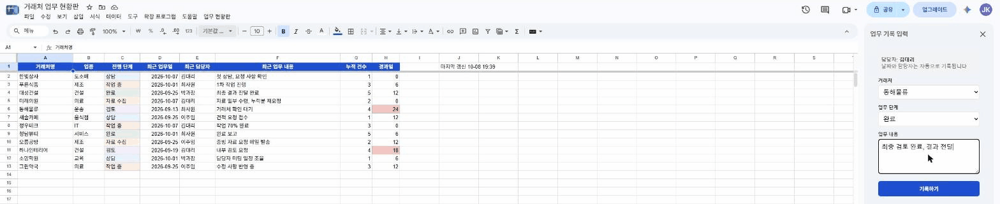
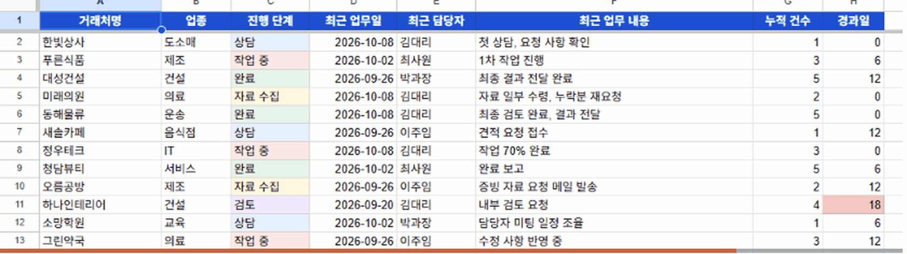

← 전체 서비스
구글 시트 거래처 업무 현황판 (실제 동작 영상)
구글 스프레드시트에 자동화 스크립트를 붙여 만든 실제로 작동하는 현황판입니다. 직원이 업무를 기록하면 거래처별 진행 상황이 즉시 자동으로 반영됩니다. 별도 서버 없이 구글 계정만으로 쓰기 때문에 운영비가 들지 않습니다.
🔊 소리를 켜고 보세요. 47초, 자막과 음성 설명이 들어 있습니다. 거래처명과 기록은 모두 예시 데이터입니다.
이렇게 동작합니다
- 시트 메뉴 업무 현황판 → 업무 기록 입력을 누르면 오른쪽에 입력창이 열립니다
- 거래처와 업무 단계를 고르고 내용을 적어 기록하기
- 로그인한 직원 이름과 날짜가 자동 기록됩니다
- 거래처 현황에 진행 단계·최근 업무·경과일이 즉시 반영되고, 오래 방치된 거래처는 빨간색으로 표시됩니다
이런 곳에 맞춰 만들 수 있어요
- 거래처·고객 관리, 상담 이력 관리
- 주문·발주·납품 진행 현황
- 직원별 업무 일지, 재택 근무 보고
- 지금 쓰시는 엑셀·구글 시트 양식을 그대로 살려서 자동화

